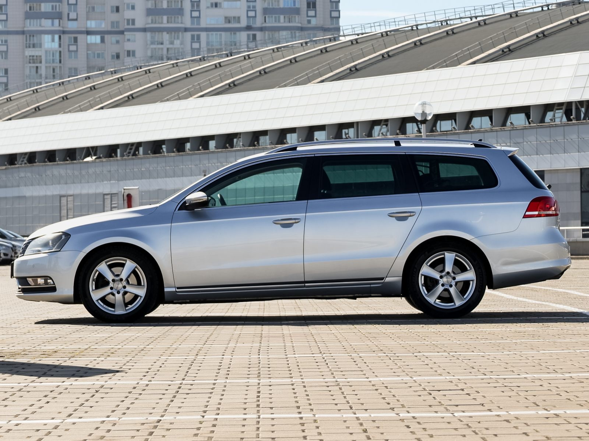
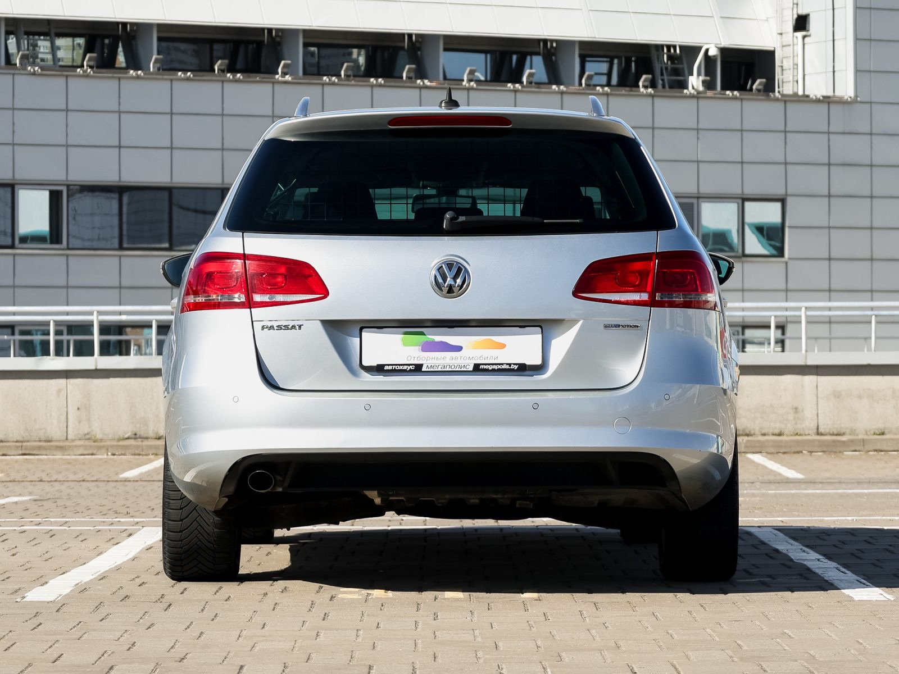
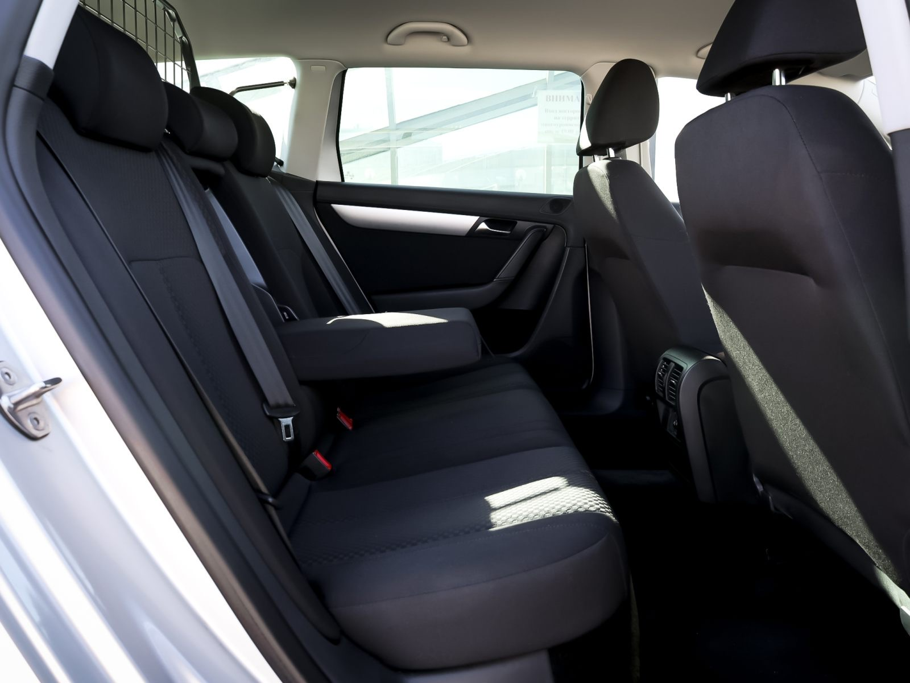
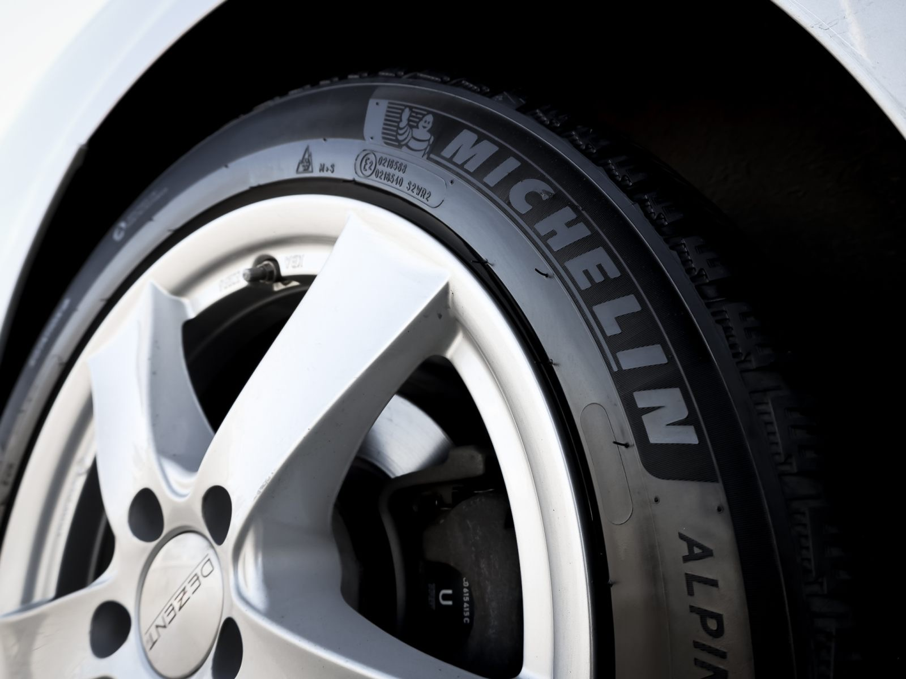
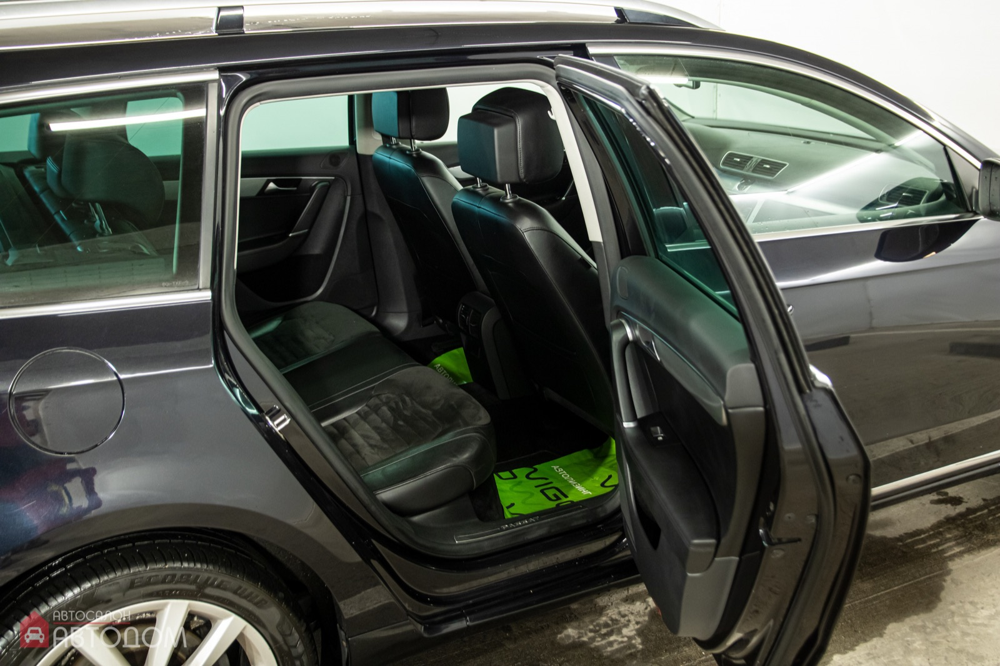

Один номинал у 1.6 и у всех 2.0 TDI, седан и универсал. Исключения — ниже.
01 — что это
Большой Passat прошлого рестайлинга.
B7 выпускали с 2010 по 2014 год. Это тот же Passat, что и B6, с другим лицом и салоном, а не новая платформа. На трассе он тихий и ровный, салон взрослый. Клиренс около 14 см: для дачи и зимней колеи машина низкая.
Дизель здесь как раз сильная сторона. Бензиновый 1.8 TSI тех же лет стоит дешевле, примерно 7 500–10 000 $, и отцу не нужен: цепь ГРМ и масложор. Среди объявлений «за одиннадцать» легко попадает именно такой бензин. Шильдик Passat сам по себе ничего не гарантирует.
По топливу B7 с 2.0 TDI дешёвый. По ремонту — нет. Это не Логан. Дешевле запущенного бензинового турбо, дороже простого корейского дизеля. Городские короткие поездки забивают сажевый фильтр и EGR, и тогда «экономный дизель» становится дорогим.
Кадр в шапке — не рисунок, а машина, которая стоит около ваших денег: универсал 1.6, не двухлитровый. На рынке за 11–12 тысяч чаще попадается именно он.
02 — бак, по каждому мотору
Семьдесят литров почти у всех. Нюанс не в литраже.
Заводской номинал Passat B7 для бензина и дизеля — 70 литров. Так написано в британской спецификации Volkswagen за декабрь 2013: и у 1.6 TDI BlueMotion, и у двухлитровых дизелей, и у Alltrack 2.0 TDI 4Motion на 140 и 177 сил. Седан и универсал здесь не отличаются. Цифра приблизительная: в горловину входит ещё немного сверху.
1.6 TDI, 105 л.с.
70 лКод CAYC. Шильдики BlueMotion и BlueMotion Technology бак не уменьшают. BlueMotion занижает кузов: спереди примерно на 15 мм, сзади на 7,5 мм, клиренс и без того около 14 см становится ещё злее. На трассе мотор ест около 5 л, в городе до 7. Семьдесят литров на трассе теоретически далеко за тысячу километров, зимой закладывайте примерно на литр больше расхода. Слабое место не бак, а связка с сухим роботом DQ200 и нехватка тяги у тяжёлого кузова. В объявлении Мегаполиса на такой машине бак прямо указан как 70 л.
2.0 TDI, 140 л.с.
70 лКод CFFB, 320 Нм. Тот же бак. Трасса около 5–5,5 л, смешанный режим около 6–6,5. До лампы на трассе выходит порядка тысячи километров, если не крутить и не везти полный салон. Это лучший вариант под запрос отца: бак большой, мотор тянет, механика живая. Лампа резерва — не приглашение ехать ещё сто километров.
2.0 TDI, 170 и 177 л.с.
70 лКоды CFGB и CFGC. Бак тот же, в том числе на полном приводе 4Motion и Alltrack: в заводской таблице Alltrack тоже 70 л. Полный привод литры не отъедает, он добавляет вес и расход. Если ездить бодро, к трассовым 5,5 легко добавляется литр, и запас хода короче, чем у стосорокового, при той же заправке. Маховик и турбина живут меньше.
2.0 BlueTDI, 140 л.с.
70 + 17 лДизеля по-прежнему 70 л. Отдельно стоит бак AdBlue примерно на 17 л, у Volkswagen он в нише запасного колеса. Полноразмерная запаска туда уже не встаёт. Мочевина — не топливо и запас хода не увеличивает. Зимой она кристаллизуется около −11 °C, в баке есть подогрев, и именно он вместе с насосом потом стоит денег. На крышке может не быть отдельной горловины рядом с дизелем: заливная у B7 часто в багажнике. Шильдик BlueMotion на крышке багажника — это не BlueTDI и не повод искать мочевину.
1.4 TSI EcoFuel
31 л бензинаЕдинственный B7 с маленьким баком. Это метан, не дизель: бензиновый резерв около 31 л, газ заправляется отдельно, под той же крышкой лючка. Цифра «21 литр», которая гуляет по каталогам, относится к газовым версиям, не к TDI. Отцу такая машина не нужна, даже если в объявлении написано «большой запас хода».
Если в карточке дизеля стоит 55, 66 или 80 литров — это либо путаница с другим поколением (у B8 бак часто меньше, у старого B5 бывал и 80), либо продавец переписал чужое описание. Лючок у B7 на правом заднем крыле. По фото лючка объём не узнать: смотрите VIN и шильдик, а у BlueTDI ещё и нишу запаски.
03 — что брать под капотом
Один мотор из четырёх.
Все дизели этого кузова с ремнём. Европейский интервал «раз в 210 тысяч» для нашей солярки длинный. Разумный срок — 100–120 тысяч километров или 5–6 лет. Машине 2012 года резина ремня уже старая, даже если пробег небольшой.
2.0 TDI, 140 л.с.
братьКод CFFB, 320 Нм. Трасса около 5–5,5 л, смешанный режим около 6–6,5. Рядом должна стоять механика. Мокрый шестиступенчатый робот DQ250 терпим, если масло меняли каждые 40–60 тысяч и на тесте нет тычка с первой на вторую.
Масло — раз в 8–10 тысяч, не по длинному европейскому сервису. На ранних 2.0 до примерно 2011 года (код CBAB) изнашивался привод масляного насоса. CFFB 2012 года уже другой, но интервал 30 тысяч этот риск возвращает.
1.6 TDI, 105 л.с.
CAYCТрасса около 5 л, город до 7. Для тяжёлого Пассата слабоват. Часто с сухим роботом DQ200: сцепления и дифференциал. Отцу, которому нужно «сел и поехал», эта связка мимо.
2.0 TDI, 170 и 177
CFGB / CFGCТот же мотор, только злее. Дороже в покупке и быстрее расходует маховик с турбиной. Имеет смысл, если экземпляр живее стосорокового, а не потому что в объявлении больше лошадей.
BlueTDI
мочевинаОтдельная версия с бачком AdBlue, не путать с шильдиком BlueMotion. На av.by продавцы часто пишут BlueTDI на обычный 2.0. Проверяется по VIN и по бачку под полом багажника. Зимой мочевина кристаллизуется, насос и подогрев стоят заметных денег.
Шестиступенчатая механика
То, что нужно. Сальники приводов иногда текут ближе к 200 тысячам. Слабое место не коробка, а сцепление и двухмассовый маховик: на дизеле это расходник. Стучит на холостых и при глушении — уже в смету, 700–1 400 $.
DQ250, мокрый робот
Стоит на 2.0 TDI. Живёт, пока меняют масло. Без замены мехатроник сдаётся раньше. На тесте — пробка, прогрев, переключение 1–2.
DQ200, сухой робот
Семь передач. Частый спутник 1.6 TDI и бензиновых 1.4 / 1.8. Для спокойной эксплуатации это лишний риск, не экономия.
04 — сколько это стоит в РБ
Одиннадцать тысяч сидят посередине вилки.
Срез av.by и салонов на 12 ноября 2026. Дизельные B7 2011–2014 годов с пробегом 200–300 тысяч кучно стоят 10 600–12 500 $. Салоны держат верх. Ваши 11 000 $ — нормальные деньги за 2012 год в богатой комплектации, если это 2.0, пробег до ~250 тысяч, ремень и сцепление сделаны, кузов без серьёзной рихтовки.
Если под капотом 1.6, в ногах робот или на одометре 280+ без бумаг — разговор начинается с 9 500–10 000 $. Салоны почти всегда оставляют 500–1 000 $.
9,3
11,0
13,4
Тысячи долларов. Слева бензиновый 1.8, справа двухлитровый дизель на 170 сил. Шкала от 9 000 до 14 000.
Ближайший живой аналог · av.by
10 600 $
2012 · 2.0 · механика · седан · 240 000 км
Минск. В карточке написано BlueTDI: глазами проверить бачок AdBlue, продавцы часто путают его с BlueMotion. Салон тёмная ткань.
Открыть объявлениеВерх вилки · av.by
13 400 $
2011 · 2.0 TDI 170 · механика · универсал · 273 000 км
Барановичи, салон. Снят с учёта. Контакты в карточке уже пропадали — цену фиксируем как ориентир.
Открыть объявлениеСалон · 1.6
11 950 $
2012 · 1.6 TDI · механика · универсал · 241 000 км
Автохаус Мегаполис. В описании прямо указан бак 70 л и ремень, сделанный в Голландии.
Открыть карточкуСалон · Минск
11 888 $
2012 · 1.6 TDI · механика · универсал · 306 333 км
Автодом, Разинская. На странице 36 400 рублей. Разбор фото этой машины — ниже.
Карточка машиныУже продано · для масштаба
11 700 $
2014 · 1.6 TDI · механика · универсал · 265 000 км
Минск. Годом новее и всё равно в тех же деньгах. «Поновее» внутри бюджета — это 2013–2014 того же B7.
Карточка на av.byЕщё пачка 1.6 TDI 2012–2013 годов с пробегом 200–287 тысяч в Гродно, Мозыре и Минске висела по 11 700–12 000 $. Общий список Passat на av.by: cars.av.by/volkswagen/passat. Бензин для контраста: 2012, 1.8 робот, 10 450 $ и 2011, 1.8 робот, 9 300 $. Объявления снимают, ссылка может опустеть. Сам av.by фото наружу не отдал, поэтому ниже разобраны кадры двух салонов, чьи машины стоят в той же вилке.
05 — кадры из объявлений
Что видно на фото, а чего на них нет.
Два живых объявления рядом с одиннадцатью тысячами. У обоих под капотом 1.6 и механика. Капота в галереях нет: ремень, сажевый и течи по этим снимкам не проверить.
Мегаполис · 11 950 $ · 2012 · 1.6 TDI · механика · 241 000 км
Карточка салона. В тексте написано: бак 70 л, ремень меняли в Голландии 33 тысячи километров назад. На фото это не доказано, это слова продавца.








Автодом · 11 888 $ · 2012 · 1.6 TDI · механика · 306 333 км
Карточка на Разинской. Чёрный универсал, в описании алькантара. Цена на странице 36 400 рублей, салон сам переводит это в 11 888 $. Пробег в характеристиках 306 333 км.



Обе галереи обрываются на салоне. Перед задатком всё равно нужны капот, холодный пуск, компьютер и толщиномер. Ссылки на av.by с двухлитровыми машинами остаются в блоке цен: их фото площадка не отдала, карточки открываются по ссылке.
06 — где уходят деньги
Солярка дешёвая. Узлы нет.
Порядок цен по Беларуси на пробеге за 200 тысяч. Это не прайс СТО, а масштаб, чтобы 11 тысяч не казались финальным чеком.
- Ремень ГРМ, помпа, ролики300–500 $
- Сцепление и двухмассовый маховик700–1 400 $
- Форсунка, одна150–400 $
- Клапан EGR200–600 $
- Сажевый, если менять, а не вырезатьдо 1 500 $
- ТНВД Bosch CP4, если рассыпалсяот 1 500 $
- Передняя подвеска по кругу400–800 $
- Масло мокрого робота DQ250150–250 $
ТНВД на 2.0 TDI ломается редко и дорого: стружка идёт по всей топливной. Держится нормальной соляркой, фильтром раз в 15–20 тысяч и запретом ездить на горящей лампе бака.
Сажевый и EGR боятся города. Живой фильтр — плюс к машине. Вырезанный в Беларуси формально меняет конструкцию. На техосмотре 2026 дымность меряют дымомером: если дымит, не пройдёт. Удаление «как получится», с ошибкой на панели, — повод уходить. Как устроена проверка, коротко пишет Белтехосмотр.
Подвеска на наших дорогах ест стойки стабилизатора часто, сайлентблоки и ступичные — по состоянию. На B7 шаровые и сайлентблоки меняются отдельно от рычага, это спокойнее, чем было у B6.
Отдельно: потёкший радиатор печки снимается вместе с торпедой. Кузов оцинкован, лак тонкий. Пороги, задние арки и металл под подкрылками смотреть обязательно, особенно если машина зимы провела в Германии, Польше или Прибалтике.
07 — до задатка
Четыре факта, без которых цена пустая.
Код мотора, коробка, пробег по техосмотрам и дата ремня. Пока этого нет, «хорошая комплектация за одиннадцать» — разговор ни о чём.
-
VIN
Нужны коды CFFB, CFGB или CFGC и механика. Либо DQ250 с чеками на масло. Бензиновый CDAA и коробка DQ200 — отказ.
-
Бачок под полом багажника
Если в тексте объявления BlueTDI, AdBlue должен быть виден. Нет бачка — продавец перепутал название, и это как раз хорошо.
-
Компьютер
Коррекции форсунок, зольность сажевого, EGR, давление масла, ошибки коробки. Холодный пуск, цвет дыма, стук маховика.
-
Ремень по бумаге
Дата и пробег замены. Нет заказ-наряда — в торг сразу закладывается комплект с помпой.
-
Кузов
Толщиномер, пороги, арки, пол багажника, лючок. Печка на обе стороны. Клиренс около 14 см — проехать ту дорогу, по которой отец ездит зимой.
-
Пробег
Сверить с белорусскими техосмотрами и историей до ввоза. Честные 180–220 тысяч и живой салон за 11 тысяч — удачный экземпляр. Триста тысяч в «отличной комплектации» — верх рынка.
08 — почитать до осмотра
Чужие разборы, наши оговорки.
Длинные цитаты сюда не тащил. Ниже источники, по которым собран этот разбор, и где у них слабое место.
-
За рулём. Все болячки B7
Коротко и по делу: ходовая, DSG, кузов зимой. Дизели в российском тексте названы редкими — в белорусских объявлениях их как раз много.
-
Колёса. TSI, DSG и что из этого миф
Полезно про бензин и роботы. Коды дизелей в статье перепутаны: на B7 и CFFB, и более ранний CBAB — это Common Rail с ремнём, не насос-форсунки.
-
Allcarz. Поиск на вторичке
Сводка по подвеске, полному приводу Haldex и разнице сухого и мокрого робота. Haldex отцу на переднем приводе не нужен, но ресурс муфты там описан трезво.
-
Carsmag. Белорусский разбор
Про кузов, зиму и коробки читать можно. Про моторы осторожно: 1.6 TDI там назван цепным, хотя у CAYC ремень, а CFFB и CBAB снова стоят не на своих местах.
-
Volkswagen Newsroom. Заводской список моторов
Официальная линейка B7: 1.6 TDI 105, 2.0 TDI 140 и 170/177, отдельно 2.0 BlueTDI 140. Удобно сверять то, что продавец написал в объявлении.
-
av.by. Все Passat в продаже
Живая витрина. Фильтр по году и дизелю лучше выставить руками: карточки выше могли уже уйти.
Срез цен 12 ноября 2026, av.by, Мегаполис и Автодом. Объявления снимают, доллар к рублю плавает, конкретный экземпляр без VIN здесь не осмотрен. Кадры на странице собраны отдельно и не являются фотографиями машин из ссылок. Это разбор для покупки, не оферта и не отчёт диагностики.